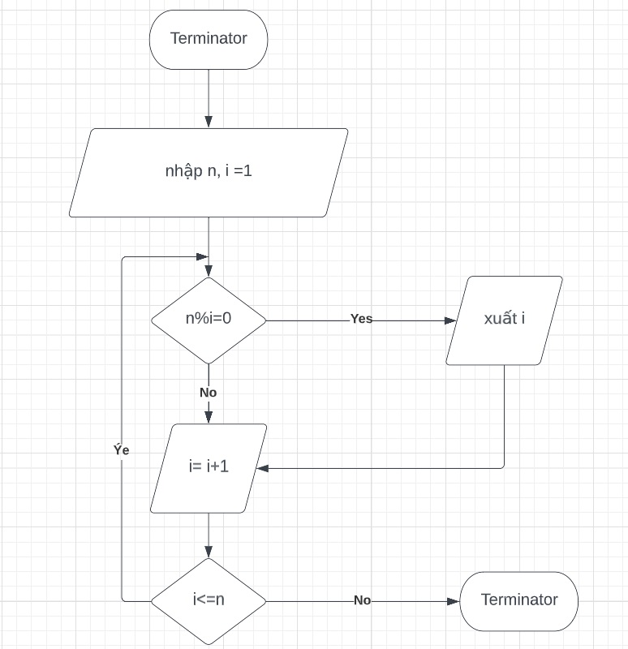
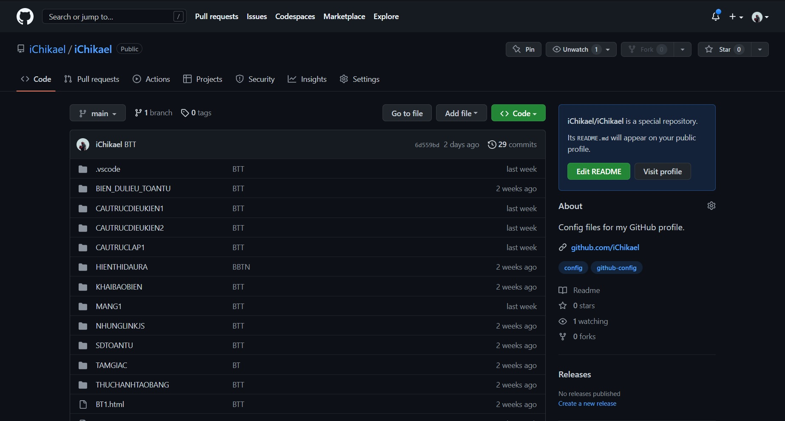
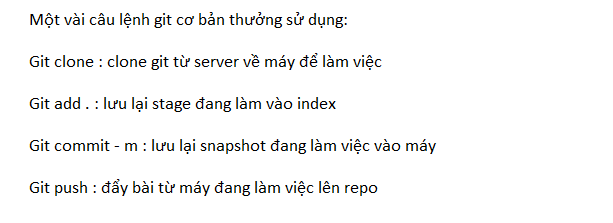
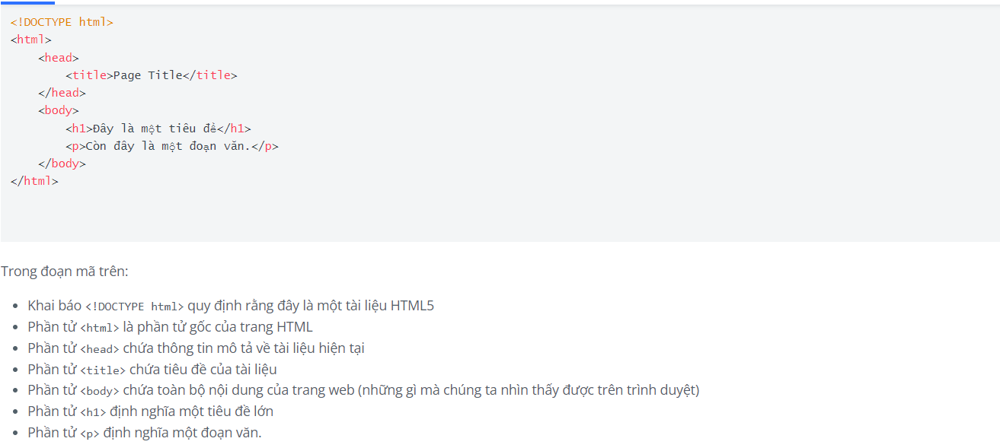
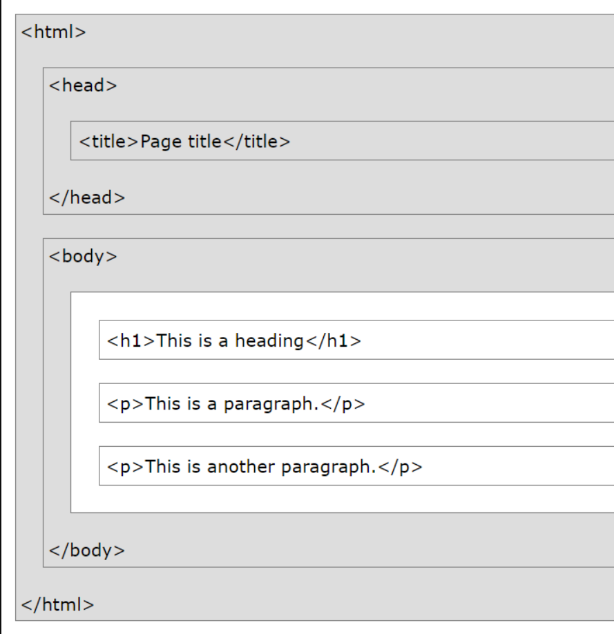
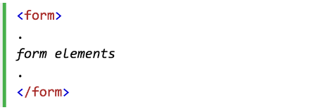
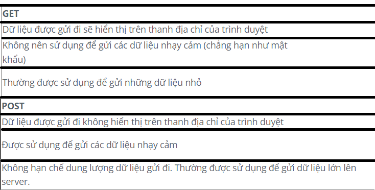

Các khóa học "Học cách học", "Hoàn thành mọi việc với Kanban 2.0", "Kỹ năng làm việc tại doanh
nghiệp".
Các bài đã được học và đã được áp dụng:
Mô tả thuật toán bằng Pseudo cosde & flowchart.
Định nghĩa mã giả và ví dụ
Định nghĩa lưu đồ và ví dụ
Ý nghĩa của những biểu tượng trong lưu đồ
Trình bày cấu trúc IF bằng mã giả và lưu đồ
Trình bày cấu trúc IF-ELSE bằng mã giả và lưu đồ
Trình bày cấu trúc IF lồng nhau bằng mã giả và lưu đồ
Trình bày cấu trúc Vòng lặp bằng mã giả và lưu đồ
Ví dụ pseudo: 
Git & HTML.
GIT
Khái niệm về Git
Git là một cách thức (mô hình, giao thức, công cụ, qui tắc) để lưu
trữ mã nguồn và hỗ trợ cộng tác trong quá trình phát triển ứng dụng.
Hãy tưởng tượng, Bob và James cùng tham gia phát triển một dự án. Họ lưu trữ mã nguồn của dự
án ở đâu? Làm thế nào để họ cộng tác với nhau? Làm thế nào để họ chia sẻ chung một bộ mã
nguồn? Git có thể giúp Bob và James trong trường hợp này
Repository
Là nơi chứa mã nguồn (repository có nghĩa là "kho chứa"), tức là nơi mà
chúng ta lưu trữ các file, các đoạn mã được viết ra trong suốt quá trình phát triển dự án.
Có 2 loại Repository là Local Repository và Remote Repository.
Local Repository
Là nơi lưu trữ mã nguồn trên máy tính của lập trình viên. Chẳng
hạn Bob và James mỗi người đều có các Local Repository trên máy của riêng mình. Các đoạn mã
do Bob hoặc James viết ra đều được lưu trữ trên các Local Repository đó.
Remote Repository
Là nơi lưu trữ mã nguồn ở trên mạng (chẳng hạn là mạng Internet
hay là mạng nội bộ của một công ty). Để có Remote Repository thì chúng ta cần có một máy chủ
và cài Git Server lên đó. Hoặc chúng ta có thể sử dụng các dịch vụ miễn phí (chẳng hạn như
GitHub.com, GitLab.com...). Remote Repository (có nghĩa là "kho chứa từ xa") là nơi mà cả
Bob và James đều có thể truy cập được để tải mã nguồn về hoặc đưa mã nguồn lên đó
Version
Là trạng thái mã nguồn ở một thời điểm nhất định nào đó. Chẳng hạn, sáng hôm
nay Bob hoàn thành xong tính năng Đăng nhập của website, Bob quyết định đánh dấu rằng đây là
một phiên bản của mã nguồn. Đến buổi trưa, James hoàn thành tính năng Cài đặt lại mật khẩu,
James lại quyết định đánh dấu rằng đây là một phiên bản nữa của mã nguồn. Như vậy, có thể
thấy rằng trong quá trình phát triển một dự án thì mã nguồn sẽ có rất nhiều phiên bản được
tạo ra liên tiếp nhau. Đến buổi chiều, chẳng may Bob lỡ tay xoá mất mấy đoạn mã quan trọng.
Nhưng Bob không hề lo lắng, bởi vì Bob có thể "quay trở về" phiên bản trước đó của mã nguồn
một cách dễ dàng. Đó là một trong rất nhiều những lợi ích của việc quản lý phiên bản mã
nguồn.
Quản lý Phiên bản mã nguồn
Git không chỉ giúp chúng ta quản lý mã nguồn mà còn quản
lý phiên bản mã nguồn. Tức là giúp chúng ta làm chủ được từng thay đổi của mã nguồn theo
thời gian.
Đồng bộ giữa các Repository
Ngoài Repository chung (chính là Remote Repository) thì
Bob và James đều có các Repository riêng của mình (chính là Local Repository), do đó phải có
cơ chế để đồng bộ giữa các Repository này với nhau, tức là giữ cho mã nguồn ở các Repository
này giống hệt nhau. Hay nói cách khác, tất cả các Repository này là những bản sao của nhau.
Làm việc và thực hành cơ bản với Git

Một vài câu lệnh thường sử dụng trong git 
HTML
Ý nghĩa của các thẻ HTML cơ bản 
Giới thiệu về các trình duyệt:
Trình duyệt (chẳng hạn như Chrome, IE, Firefox, Safari...) là những phần mềm được sử dụng để
đọc các tài liệu HTML và hiển thị chúng dưới dạng giao diện người dùng.
Trình duyệt không hiển thị các thẻ HTML ra giao diện, thay vào đó chúng dựa vào các thẻ HTML
để biết phải hiển thị những thành phần tương ứng ra giao diện. Chẳng hạn ở ví dụ trên, khi
trình duyệt đọc được một thẻ <h1> thì chúng sẽ hiển thị ra một tiêu đề lớn, còn khi
đọc được một thẻ <p>thì lại hiển thị một đoạn văn bản
Cấu trúc của một trang HTML 
Một số thuộc tính nổi bật của một vài thẻ HTML cơ bản:
Các thẻ HTML có thể khai báo thêm các thuộc tính
Các thuộc tính cung cấp thêm các thông tin cần thiết cho thẻ
Thuộc tính luôn được viết trong thẻ mở
Thuộc tính đi thành cặp thuộc_tính/giá_trị dạng: tên_thuộc_tính="giá_trị"
Lưu ý khi viết tên các thẻ HTML : Luôn viết thuộc tính bằng chữ in thường, luôn đặt giá trị
trong cặp dấu nháy
HTML Form & Table.
Cú pháp của form 
Thuộc tính action của form
Thuộc tính action quy định nơi dữ liệu được gửi đến. Địa chỉ
này có thể là trên cùng server với trang web hiện tại hoặc trên bất kỳ server nào khác.
Thuộc tính method của form
Thuộc tính method quy định cách thức dữ liệu được gửi lên
server. Có 2 cách thức thường được sử dụng đó là POST và GET
Phân biệt POST và GET

Cách đặt tên cho các trường trong form :
Cần phải đặt tên cho các trường của biểu mẫu.
Nếu một trường nào đó không được đặt tên thì dữ liệu của trường đó sẽ bị bỏ qua
Các loại input phổ biến : text, password, checkbox, radio, reset, submit, hidden
Sử dùng cặp thẻ <select> <option> :
Thẻ <select> được sử dụng chung với thẻ <option> để tạo một danh sách drop-down hoặc list, cho phép chọn một hoặc nhiều hạng mục từ một danh sách có sẵn. Ví dụ :
Kiến thúc sử dụng các cặp thẻ <table>, <tr>, <th>, <td>:
<table>: Định nghĩa một bảng
<tr>: Định nghĩa một dòng
<th>: Định nghĩa một ô tiêu đề
<td>: Định nghĩa một ô dữ liệu.
Ví dụ về bảng :
Firstname
Lastname
Age
Văn Cường
Hứa
30
Lực
Đinh
50
Javascript.
Định nghĩa Javascript :
JavaScript là một ngôn ngữ script được dùng để tạo các script ở máy client và máy server. Các script ở máy client có thể thực thi được trong trình duyệt trong khi các script ở máy server lại thực hiện trên server.
Ý nghĩa ngôn ngữ Javascript :
Javascript là một ngôn ngữ lập trình dùng để xử lý các sự kiện và tác động trên các phần tử trong một trang web. Nó có thể được sử dụng để tạo ra các hiệu ứng trực quan, xử lý dữ liệu và tương tác với máy chủ.
Mục tiêu của Javascript :
Mục tiêu của Javascript là giúp cho các trang web trở nên đẹp mắt hơn và tương tác đa dạng hơn, giúp người dùng trải nghiệm tốt hơn trên trang web. Nó cũng có thể dùng để xử lý dữ liệu và tương tác với máy chủ, giúp cho các trang web hoạt động mượt mà hơn và có thể cập nhật dữ liệu mà không cần tải lại trang.